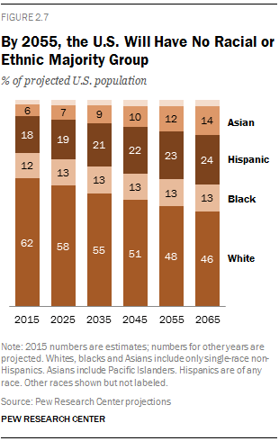

Michael is the author of Staying Married in a Degenerate Age. Follow him on Twitter or Facebook. You can read more of his writing at Honor and Daring.


The alt lite and the alt right agree on several things, namely the need to respect national sovereignty, strong borders, and opposing globalism. But the biggest difference between the two camps is that the alt lite believes that it is still possible to hold the United States together using civic nationalism. But here’s why civic nationalism is doomed to failure.
Civic nationalism is the idea that diverse groups of people can get together and build a nation without their ethnic loyalties taking a priority over that of the nation. The US in the 20th Century was a good example of a working civic nationalism. Groups of mostly western Europeans laid aside their old loyalties and committed themselves fully to the American project. Immigrants often did not bother to teach their children their native languages because they wanted their children to become Americans, not Germans, Italians, and Frenchmen who happen to live in the US.
The opposite of civic nationalism would be ethnic nationalism. In ethnic nationalism, people support the nation because it mostly consists of others who are more or less related—they look similar, they speak the same language, they have the same religion, and they have a shared culture. Some examples of ethno-nationalist states are South Korea, Japan, Israel, and Poland. It doesn’t mean that they have no foreigners living within their nation; it just means that the overwhelming majority of people are from the same ethnic group.
It is important to note that in an ethno-nationalist state, foreigners may be respected and treated well, but they may feel that they can ever become fully Korean or fully Polish. It may take a couple of generations before their descendants finally become part of the ethnos.
Unity based on a soft drink
Civic nationalism only works if a new people is created. This happened in the US in the 20th century. American culture replaced the immigrants’ old culture. There was even a sort of national religion which political philosopher Samuel Huntington defined as a Christianity without Christ. When asked who they were, these Americans did not say, “I’m German-American,” or “I’m English American.” The response was always, “I’m an American,” and it was said with pride.
The one group that was somewhat excluded from being fully American were blacks. There were several reasons for this including the history of slavery, cultural differences, and the fact that they looked very different from the white majority.
Starting in the 1960s, the US undertook a herculean effort to incorporate the black community into the American mainstream. American elites, through government legislation, affirmative action, welfare, judicial activism, Hollywood, television, and educational institutions put in place measures to remove all impediments to blacks integrating.
Fifty years later, it is fair to say that the effort to integrate blacks into the American mainstream has failed. While it is true that some blacks have benefited from Byzantine conglomeration of measures put into place by the elites, blacks “continue to lag far behind whites in key areas of economic well-being like wealth, income and home ownership.”
Of course, this system to integrate blacks is not free. Publisher and sci-fi writer Vox Day calculated that the average white American will transfer almost a million dollars to a black American over the course of a lifetime when you take into account interest on the federal debt. If the calculation is correct, the system the elites have put in place is unjust and unsustainable.
If you are a white American, over the course of your life you will transfer a net average of $971,000 to a single black individual.
— Supreme Dark Lord (@voxday) June 30, 2017
If Americans were aware of how big the failure of the war on poverty has been, they would immediately put a stop to the system. But the media and universities deliberately whitewash the real story to preserve the system for a while longer. Meanwhile, the elites have implemented a Plan B to solve the problem.
Plan B takes a different approach. Rather than trying to integrate blacks into white society, Plan B aims to do away with white society altogether. It does this in four ways: through unchecked third world immigration, encouraging miscegenation and low birth rates, and calling for a need for an end to “whiteness.”

Before 1965, virtually all of the immigration into the US was from Europe. Now, the vast majority of immigrants come from Central America, Asia, and Africa. And we are at record high immigration levels. Whites have gone from 89% of the population in 1960 to 62% in 2010. This sort of population replacement normally does not occur except in cases of full scale military invasion.
State Farm ad
The media is encouraging intermarriage through television shows, movies, and commercials. The excuse given is that the producers are just reflecting the diversity of the US but it seems a lot more pervasive in the media than it does in the real world.
Another common tactic aimed at whites is trying to persuade women to have fewer babies. But you’ll never see a “have fewer babies” article with black, Asian, or Hispanic women and babies. It is always white women and babies that are featured. This is one area where the media completely forgets about diversity.
The latest attack has been to challenge “whiteness” itself. Whiteness is a social construct that is inextricably linked, we are told, with racism. Some have gone further, even issuing not so subtle calls to violence against whites. But we never see articles encouraging blacks to give up their blackness or for Jews to give up Jewishness.
Donald Trump subscribes to civic nationalism. His campaign promise, and I believe he was being sincere when he made it, was to make America great—lifting all Americans, whatever their color. If anyone could make civic nationalism work, it would be Trump. Sadly, it doesn’t look like Trump is going to get the support of his own party in realizing his vision. Establishment GOP politicians are too beholden to wealthy plutocrats to allow any serious derailment of their plan turn the US into a country with no identifiable majority.
In truth, though, even Trump’s plan to restore civic nationalism does not go far enough. To do that, it would take more than deporting a few illegals and improving the US economy. It would require a complete rollback of the entire affirmative action apparatus, a moratorium on immigrations, and a complete reworking of existing social programs. No one, not Trump and not the alt lite, is talking about this. Thus, the civic nationalism train has left the station.
Rather than civic nationalism, the future looks more tribal—men will align with whatever group they share the most commonalities with. For most Americans, that may mean embracing some form of white nationalism. There is already an increasing amount of agreement between far right groups in the US and Europe. The elites recognize this and they are frightened, and with good reason—there has never been this level of cooperation between white nationalist groups across the globe.
But white nationalism is not the only possibility. There are a few religious groups that have the possibility of forming tribes that do not strictly break along racial lines. Catholics, Mormons, the Orthodox, and Muslims all possess the strong infrastructure necessary to unite their adherents into self-sufficient communities once order begins to retreat.
Finally, there is one possibility that does not involve tribalism—an empire built upon spiritual unity. The Holy Roman Empire, which lasted a thousand years, encompassed many different peoples but who shared a common faith. Given the disappearance of belief in the US and Europe, this possibility is a long-shot.
Civic nationalism is only possible when there is something that strongly unites a group of people. American elites, perhaps with good intentions at the start, have systematically undermined everything that bound Americans together. Now we are left with a bunch of groups that will become increasingly polarized over the next decade. Begin preparing now for the inevitable.
Read More: Why Democracy, Nationalism, And Globalist Economics Can’t Coexist